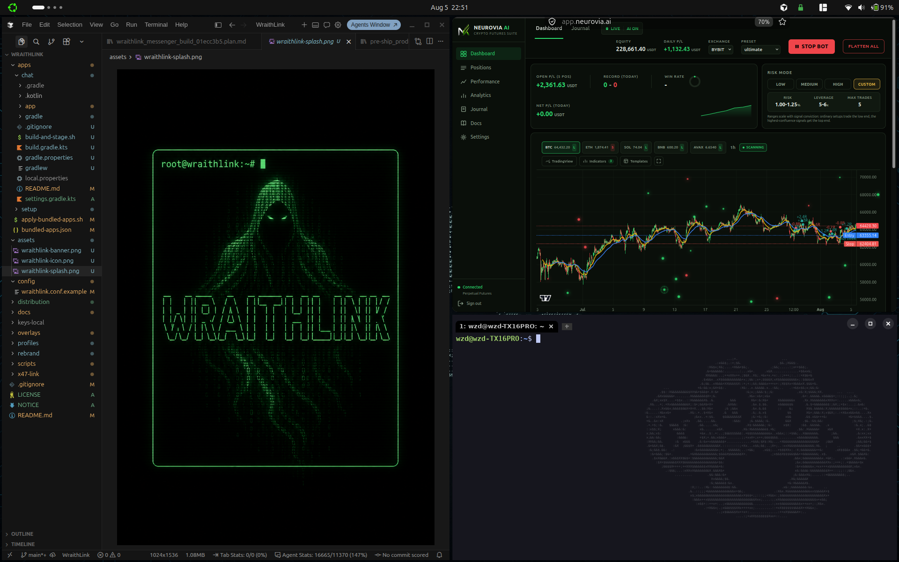

What this is
A reproducible build for Ubuntu 26.04 desktops. Clone the repo,
run install.sh, and get the same toolchain and hardening
used on the reference machine. Part of
VulnScape.
- WezTerm as default terminal (wide window + X47 watermark)
- Privacy apps — Mullvad VPN and Tor Browser
- Pentest + dev tools via apt, Go, pipx, cargo, and release binaries
- Performance + Visual — lean default (no cube), optional Visual stack (cube, animations, multi-colour desktops; dock off in both); toggle from the top-bar chip
- Hardened Firefox — default browser; stock tabs and toolbar
- Display comfort — brightness / blue-light / glare panel; Adaptive on Visual
- Syncthing — optional hardened LAN sync to Android/PC (
~/X47Share) - X47 Updates — one place for apt, snap, and Cursor upgrades
- Hardening from snapshot (UFW, fail2ban, AppArmor, auditd, sysctl)
- Amnesia mode (opt-in) — RAM-only
anonhome, Tor kill-switch, Nym status, random MAC - Windows kit — dual-boot privacy twin (security & privacy, install)
Get the installer
Source and releases live on GitHub. There is no separate store or paid download.
git clone https://github.com/sk1tzwzd/ubuntu-x47-build.git
cd ubuntu-x47-build
chmod +x install.sh snapshot.sh modules/*.sh
./install.shSee Releases for Latest vs ISO archives, or browse GitHub releases.
Install from ISO
Bootable images are published on ISO-tagged releases (not every source bump). Grab the parts from a release titled Installer ISO, or start from the releases list. Fresh Ubuntu 26.04 install — you choose language, disk, and user. Pick Install X47 Ubuntu 26.04 at boot; first login runs setup. GitHub caps assets at 2 GB, so the ISO is split:
# download SHA256SUMS + every x47-ubuntu-26.04-desktop-amd64.iso.*.part, then:
cat x47-ubuntu-26.04-desktop-amd64.iso.*.part > x47-ubuntu-26.04-desktop-amd64.iso
sha256sum -c SHA256SUMS --ignore-missingMore screenshots
Tiled daily driver, WezTerm, and the optional amnesia session.



anon session — Tor verified, optional persistent storage.